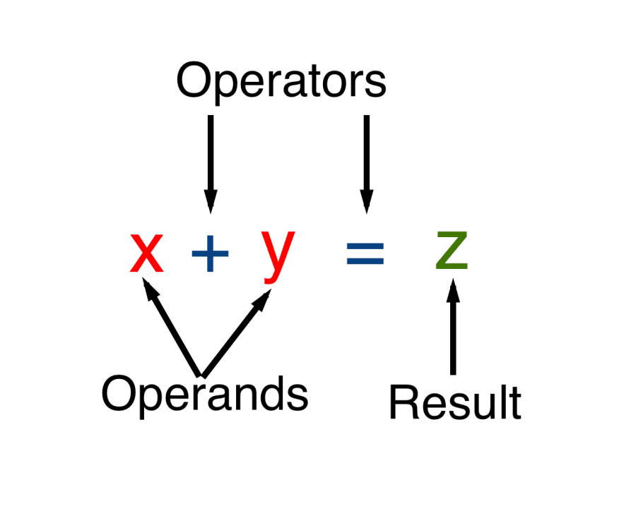
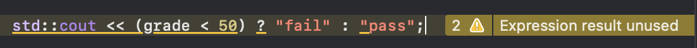

Expression
An expression consists of
- Operands (can be
lvalueorrvalue) - Operators
And produce a
- result (can be
lvalueorrvalue)

Operands
Type promotion https://en.wikipedia.org/wiki/Type_conversion
Overloaded Operators
Seed "overloading"
Evaluation Results
Every expression in C++ will generate either an rvalue or an lvalue.
Precedence and Associativity
Read "chap05-precedence-associativity"
rvalue and lvalue
Read "chap05-rvalue-lvalue-move"
Overloading
Read "overloading"
Arithmetic Operator
| Operator | Function | Use |
|---|---|---|
| + | unary plus (useless) | + expr |
| - | unary minus (to the negative) | - expr |
| * | multiplication | expr * expr |
| / | division | expr / expr |
| % | remainder | expr % expr |
| + | addition | expr + expr |
| - | subtraction | expr - expr |
Arithmetic Exceptions
Overflow
Every data type has the range, Read https://docs.microsoft.com/en-us/cpp/cpp/data-type-ranges?view=msvc-160 If you want to use a large range, only some scientific library can help.
Division by Zero
Yes, it is also a serious problem in math
Unsigned and Signed Number
Never mix unsigned and signed numbers
- unsigned
int - signed
double,float,int
Unfortunately, if you use unsigned numbers, you lose the change of using the built-math library.
Because all math libraries are designed for signed number.
You could use some simple tricks
pow(2, 3) == 2*2*2
Logical and Relational Operators
Read C++ Primer pp141
- Logical Operators
&&,||and! - Relational Operators
==,<,>,<=, and>=
Bitwise Operators
Read C++ Primer pp153
Danger: Never use 'Bitwise' Operators in Signed Numbers
As you can see in Microsoft's C++ document, the NOT ~ operator is specific for one's complement numbers.
We know nothing how bitwise operators handle two's complement numbers.
C Bitwise Operators &, ^ and |
https://docs.microsoft.com/en-us/cpp/c-language/c-bitwise-operators?view=msvc-160
Bitwise Shift Operators >> and <<
https://docs.microsoft.com/en-us/cpp/c-language/bitwise-shift-operators?view=msvc-160
One's complement operator: ~
https://docs.microsoft.com/en-us/cpp/cpp/one-s-complement-operator-tilde?view=msvc-160
sizeof Operator
sizeofof an object/pointer/reference- the size of object
- the size of the pointer (instead of the object referred by the pointer)
- the size of object (the reference does not occupy memory space)
sizeofof array- the size of the entire array (all elements)
sizeof(arr)issizeof(arr[0])*len(arr)
Type Conversion
Implicit Conversion
- Integer promotion
- Arithmetic Conversion
- Array to pointer (the pointer to the first element)
- Implicit conversion to
boolDanger: Arithmetic Conversion
Never perform calculations involving both unsigned and signed integers
Example 1: implicit conversion to bool
char *cp = get_string();
while (*cp){
...
}
or
string s = " ";
while (std::cin >> s){
// std::cin >> s will return (*this) itself, namely cin.
// then convert cin to bool.
}
Explicit Conversion
Danger: Casting is Dangerous
Casts are inherently dangerous constructs.
As casting is usually thought of a design flaw. It would be not dicussed here.
New standard introduces named casts. https://docs.microsoft.com/en-us/cpp/cpp/casting-operators?view=msvc-160 These operators are intended to remove some of the ambiguity and danger inherent in old style C language casts.
static_castdynmaic_castconst_castreinterpret_cast
And old-style casts,
int i = 10;
double(i); // function-style cast notation in Python.
(double) i; //very-old C language cast notation.
Assignment Operators
Read C++ Primer pp144
- Assignment Operator is Right Associative
- Read from right to left
- Assignment Operator has low precedence
- After all expressions
- Compound Assignment Operators
Member Access Operator
For an object,
obj.mem
For a pointer (indirection),
(*obj).men // or
obj->mem
Conditional Operator
Read https://docs.microsoft.com/en-us/cpp/cpp/conditional-operator-q?view=msvc-160
expression ? expression : expression;
Using the conditonal operators in output std::cout
std::cout << (grade < 50) ? "fail" : "pass";

See https://docs.microsoft.com/en-us/cpp/cpp/cpp-built-in-operators-precedence-and-associativity?view=msvc-160This is because << has a higher precedence! It is actually doing
(std::cout << (grade < 50)) ? "fail" : "pass";
How to solve it ?
Let ?: has a higher precedence!
std::cout << ((grade < 50) ? "fail" : "pass");